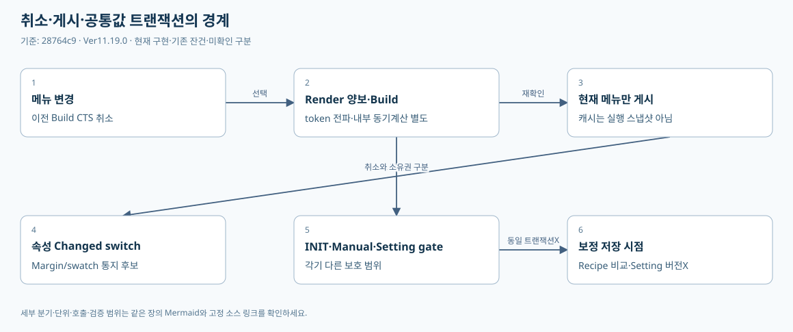

06. 스레드·스냅샷·취소·로그를 이용해 멈춤과 오동작 찾기
> 최신 원본 기준: 2026-11-25 · master Ver11.23.0 · 0219666f9053b907d96d7e0aa7d0c6c1be3a73d4. 이전 버전의 변경 설명은 연혁으로 보존하며, 이번 Stage Glass Data·Product 필드 변경은 상세장에서 다룹니다.
> 기준: A3Drilling/master · 0219666f9053b907d96d7e0aa7d0c6c1be3a73d4. 본 장은 해당 Commit의 소스를 정적으로 읽어 설명합니다. 정식 설비 빌드·장비 연결·가공을 실행한 결과가 아닙니다.
현장에서는 “버튼을 눌렀는데 멈췄다”만으로 원인을 알기 어렵습니다. UI 스레드, Station 주기 스레드, 비동기 통신, 캐시된 상태, 파일 저장 중 어디가 기다리는지 나눠야 합니다.

flowchart TD
A[UI Dispatcher·버튼] --> B[Manager 요청]
B --> C[Station CtrlThread]
B --> D[장치 비동기 명령]
E[공유 상태 취득 서비스] --> F[메모리 Snapshot]
F --> A
F --> G[Alarm 평가]
C --> H[시퀀스·통신·제품 로그]
D --> H
A --> H
1. CtrlThread는 Task.Run 한 번과 다르다
CtrlThread는 자체 Thread, pause/stop event, stopRequested, state, LastThreadError를 갖는 반복 실행 기반 클래스입니다. ThreadProcess는 stop까지 Run을 반복하고 delay 동안 stop event를 기다립니다. Run에서 예외가 나면 LastThreadError를 저장하고 OnThreadError를 호출합니다. 소스상 이 catch 자체가 즉시 while을 종료하지는 않습니다. 스레드 기본 필드 [오프라인 파일 해설], 반복 실행과 예외 처리 [오프라인 파일 해설].
| 상태 | 뜻 | 주의 |
|---|
| Stopped | 실행 스레드 정지 | 장치의 Motion 정지와 별개 |
| Running | 반복 Run 동작 | 내부 시퀀스가 Ready일 수도 있음 |
| Paused | 반복 스레드 일시정지 | 이미 보낸 하드웨어 명령을 자동 취소하는 뜻 아님 |
| Stopping | stop 요청 중 | 현재 SDK 호출이 끝나지 않으면 기다릴 수 있음 |
| Error | stop timeout 등 오류 상태 | LastThreadError와 상위 Station 상태를 같이 봄 |
근거: CtrlThread 상태 enum [오프라인 파일 해설].
Stop은 stopRequested와 event를 설정하고 외부 스레드에서 호출했다면 최대 3초 Join합니다. 멈추지 못하면 TimeoutException과 Error 상태를 남깁니다. 현재 스레드 자신이 Stop을 호출한 경우 Join하지 않습니다. 따라서 “Stop 버튼은 즉시 모든 장비 작업을 취소한다”는 설명은 이 구현만으로 성립하지 않습니다. Stop의 Join과 timeout [오프라인 파일 해설].
2. Station의 취소와 Thread의 정지는 다른 층이다
Station Start는 요청 token에 linked CancellationTokenSource를 만들고 sequence를 PowerCheck로 바꾼 다음 CtrlThread를 시작합니다. RunSequenceStep은 해당 token을 전달하며 OperationCanceledException은 Station Stop 전이로 이어집니다. sequence CTS 생성 [오프라인 파일 해설], 취소와 단계 token [오프라인 파일 해설].
취소를 지원하는 함수라도 이미 시작한 외부 SDK의 동기 호출을 즉시 중단할 수 있는지는 그 래퍼의 구현을 확인해야 합니다. 이 문장은 일반적 한계를 지적하는 검토 지침이며 이 소스의 특정 SDK가 반드시 중단 불가능하다고 단정하는 것은 아닙니다.
3. 잠금은 무엇을 보호하는가
| 소유자 | 동기화 장치 | 보호하는 데이터/작업 | 변경 시 위험 |
|---|
| CRecipeManager | Recipe operation SemaphoreSlim, cache lock, history gate | 파일 기반 작업·캐시·이력 순서 | 파일 저장 뒤 오래된 캐시를 다시 덮음 |
| CSettingManager | save lock, cache lock | section 저장과 캐시 publish | 저장 실패인데 UI만 새 값 |
| CProductManager | update gate | 한 Product의 전이·영속화 | 두 갱신이 이전 상태에서 출발하여 결과 유실 |
| CStationProcess | sequence lock | 시작/준비/수동 MOF와 sequence 상태 | 같은 모델의 이중 실행 |
| Automation1Comm | comm lock → status lock | Controller 수명·명령과 상태 조회 | 반대 순서 잠금으로 deadlock |
| Monitor polling | context/snapshot lock, motor poll gate | 선택 화면과 결과 사본 | 화면 전환과 이전 응답 혼합 |
근거: Recipe gate [오프라인 파일 해설], Setting cache/save lock [오프라인 파일 해설], Product gate [오프라인 파일 해설], Station prepare lock [오프라인 파일 해설], Automation1 lock 순서 [오프라인 파일 해설], Monitor 동기화 [오프라인 파일 해설].
설명용 주석을 추가할 때는 “스레드 안전”이라는 한 줄보다 어떤 필드/시점/잠금 순서/잠금 밖 I/O를 보호하는지 구체적으로 써야 합니다. lock이 있다는 사실만으로 객체 전체가 thread safe라고 표현하지 않습니다.
4. 상태 취득과 화면 표시를 분리하는 구조
CManager.StartBackgroundMonitoring은 공유 Motor/Laser/BET 상태 스냅샷을 시작하고 알람 평가에 ReadAlarmDeviceSnapshot을 공급합니다. 해당 함수는 “memory-only” 의도로 공유 Snapshot을 읽고 SnapshotError를 모읍니다. 느린 장치 SDK 호출이 알람 워커를 직접 붙잡지 않도록 분리한 구조입니다. 공유 취득과 알람 감시 [오프라인 파일 해설], 메모리 Snapshot을 이용한 알람 입력 [오프라인 파일 해설].
이 구조에서 표시한 값은 현재 메모리에서 마지막으로 확인한 결과일 수 있습니다. 값이 정상 범위여도 오래된 결과라면 안전 판단에 그대로 쓰면 안 되므로, 새 검증에서는 성공시각/오류/갱신 여부를 함께 확인합니다. 소스의 SnapshotError와 실제 서비스의 stale 규칙을 같이 읽어야 합니다.
CMonitorStatusPollingService는 LoopInterval 250 ms, ActiveInterval 0.5초, CommunicationInterval 1초 등의 주기를 정의하고 활성 화면 context에 따라 대상을 달리 선택합니다. UpdateContext는 선택 Tab/장치 번호/MELSEC group을 새 context로 저장하고 GetSnapshot은 lock 아래 결과를 반환합니다. Monitor 주기·context·snapshot [오프라인 파일 해설].
주의할 실제 코드가 있습니다. PowerMeter의 두 Poll 호출은 확인한 범위에서 주석 처리되어 있습니다. 따라서 상수명이 ActivePowerMeterMeasureInterval이라고 모든 화면에서 PowerMeter를 그 주기로 실제 측정한다고 설명하면 틀립니다. Tab별 실제 polling 분기 [오프라인 파일 해설].
5. UI 변경 통지는 자동으로 모든 스레드를 보정해 주지 않는다
CBindingBase의 SetProperty는 값이 같으면 알리지 않고, SetSequenceProperty는 ReferenceEquals/SequenceEqual로 같은 목록 갱신을 피합니다. OnPropertyChanged는 속성명별 이벤트를 호출하는 switch입니다. 이 함수 자체가 Dispatcher로 이동하는 것은 아닙니다. 동일값 억제와 Property 이벤트 [오프라인 파일 해설].
새 비동기 작업이 UI 속성이나 ObservableCollection을 바꾸는 경우 해당 경로의 Dispatcher 사용 여부를 확인해야 합니다. 한곳의 Dispatcher를 발견했다고 모든 await 이후 UI 접근이 안전하다고 판단하지 않습니다. RootView는 알람 갱신에 전용 Dispatcher를 보유하고 큐잉하는 경로가 있으므로, 유사 작업도 같은 패턴을 검토할 수 있습니다. (이 장은 전 UI 스레드 접근의 무결성을 검증한 보고서가 아닙니다.)
6. 로그는 사용자의 클릭·의도·실제 결과를 따로 연결해야 한다
CUiLogService.Configure는 WPF ButtonBase.ClickEvent의 class handler를 등록합니다. OnButtonClicked는 화면·Control·CommandParameter·Detail을 얻어 WriteClick에 넘깁니다. 클릭 로그가 있다는 것과 명령이 허용·실행·완료됐다는 것은 다릅니다. 실제 명령/시퀀스/통신 결과 로그와 시간·식별자를 연결해야 합니다. UI 클릭 로그 등록과 기록 [오프라인 파일 해설].
키 입력 dialog와 password dialog의 일부 글자 버튼은 ShouldSkipButton에서 제외합니다. 따라서 모든 키 입력이 그대로 텍스트 로그에 남는다고 설명해서는 안 됩니다. 진단용 로그를 확장할 때도 비밀번호·키·민감한 원문을 추가하지 않습니다. 입력 버튼 로그 제외 [오프라인 파일 해설].
| 진단 질문 | 우선 확인할 근거 |
|---|
| 사용자가 뭘 눌렀는가 | UI click의 화면·Control·parameter·시각 |
| 명령이 수락됐는가 | Station 전이/Interlock 판단/명령 accept |
| 어떤 파일·조건이었는가 | RecipeId/Product snapshot/Script manifest·RunId |
| 외부 장비가 뭘 응답했는가 | Interface command/response·MELSEC write/read 상태 |
| 실제 완료됐는가 | Task completion·Review 저장·Product 결과 |
| 완료 뒤 로그만 실패했는가 | commit 이후 History/Log error와 Active 파일 |
공통 로그의 의미는 각 호출부와 연결해 읽습니다. 예를 들어 Product는 Active 저장 이후 로그 실패가 상태 전이를 실패로 바꾸지 않도록 처리합니다. 클릭 로그가 없거나 이력이 실패했다고 실제 실행도 없었다고 단정하지 않습니다. Product의 상태와 이력 분리 [오프라인 파일 해설].
7. 현장 디버깅을 위한 검증 계획
1. 연속 클릭/교차 요청: Start 두 번, Prepare 중 다른 Recipe 선택, Stop/Reset 동시 요청을 격리 테스트합니다. 실제 명령 수와 최종 상태를 기록합니다.
2. 응답 지연: 가짜 SDK/파일 어댑터를 지연시켜 UI 응답성·snapshot 오류·Stop timeout을 각각 확인합니다.
3. 취소 시점 분리: 파일 쓰기 전/후, upload 전/후, queue feeding 중의 취소를 나눠 부분 완료와 중복 재시도를 확인합니다.
4. 메모리/파일 불일치: 저장 성공 후 이력 실패를 주입하고 새로고침/재시작이 올바른 현재값을 보여주는지 확인합니다.
5. 실행 식별자 연결: 같은 Recipe를 연속 실행해도 Product/Glass/Script directory/RunId가 섞이지 않는지 확인합니다.
6. 원인 분석용 수집: 알람 앞뒤의 UI/Station/Interface/Product/Script 상태를 같은 시간축으로 묶되 로그 반출 범위는 고객의 승인 조건을 따릅니다.
8. 11.13.0의 분석 작업과 미리보기는 다른 성능 경계를 갖습니다
Alarm 원인 분석의 파일 읽기·분류는 Task.Run에서 실행하고, 창을 닫으면 load CTS를 취소합니다. IsBusy일 때 중복 로드는 반환합니다. 반면 Monitor의 BuildCoordinateViewerScreen은 BuildCoordinateViewerData를 await하고 그 함수 안에서 좌표 계획·선택 Cell의 전체 Shot 계산행·그림을 만듭니다. 이 경로에 독립적인 Task.Run이 있다고 설명할 근거는 없습니다. 호출자의 실제 SynchronizationContext와 입력 크기를 확인해야 합니다. Alarm 로드·취소 [오프라인 파일 해설], Monitor 화면 조립 [오프라인 파일 해설], 선택 Cell 전체 Shot 계산 [오프라인 파일 해설].
flowchart TD
A[Alarm 창 Load·IsBusy] --> B[Task.Run: 로그 읽기·규칙 분류]
B --> C[UI 결과·최대 1200행씩 표시]
A --> X[창 닫기: CTS 취소]
M[Monitor 새로고침·Shot/Offset 선택] --> P[좌표 계획·Cell 전체 행 계산]
P --> D[StreamGeometry·DrawingImage Freeze]
D --> U[그림과 목록 표시]
Shot 지도는 Shot마다 WPF 버튼을 생성하는 대신 상태별 StreamGeometry에 사각형을 모아 그립니다. 그림·Geometry를 Freeze하고, 촘촘한 격자는 그리드 간격을 넓혀 그립니다. 이것은 표시 객체 수를 줄이려는 구조상 변화이며 FPS·메모리 개선 수치를 측정한 결과가 아닙니다. 여전히 전체 Shot 목록을 순회하고 좌표표를 만들기 때문에 무제한 데이터 크기를 보장하지 않습니다. Geometry 묶음과 Freeze [오프라인 파일 해설], 격자 간격 조정 [오프라인 파일 해설].
Alarm의 1200행 제한은 파일 읽기 이후 표시 선택에 적용됩니다. 파일은 앞에서부터 읽고 메모리 목록에 모으며, 최대 8개의 이전 비교 구간을 추가 탐색할 수 있습니다. 큰 로그·넓은 시간창·여러 분석창을 동시에 열 때 총 I/O·메모리는 따로 계측해야 합니다. 날짜별 로그가 시간순이라는 가정도 중요합니다. 파서는 범위 끝보다 늦은 첫 시각을 만나면 그 파일을 더 읽지 않습니다. 표시행 제한 [오프라인 파일 해설], 비교구간 탐색 [오프라인 파일 해설], 파일 순차 읽기와 break [오프라인 파일 해설].
보호윈도우의 _gate는 Update와 완료 감시를 직렬화하며, readback·파일 저장까지 gate 안에서 기다립니다. 느린 저장/통신은 다음 완료 점검을 늦출 수 있습니다. 재시도 소진 callback은 로그 쓰기 다음 SetAlarm 순서이고 상위가 예외를 잡으므로, 로그 sink가 throw하면 알람 요청까지 건너뛸 수 있는지 장애 주입으로 확인해야 합니다. 이는 조건부 위험이며 이번 분석에서 로그 장애를 실제 재현한 것은 아닙니다. 완료 처리 gate [오프라인 파일 해설], 로그 다음 알람 호출 [오프라인 파일 해설], callback 예외 처리 [오프라인 파일 해설].
검증은 합성 로그의 10³/10⁵/10⁶행·전후 0/60/3600초, 창 닫기 중 취소, 2개 분석창, 시간 역전·손상 행·동시 append로 나눕니다. Monitor는 작은/큰 Cell, 세로·가로 지도, 빠른 Shot/Offset 전환에서 UI 지연·최대 메모리·이전 선택 잔류를 측정합니다. 아직 측정 결과는 없습니다.
9. Ver11.17.0의 단일 Shot 지도와 속성 알림 경계
새 CReviewShotMapControl은 여러 WPF Button 대신 FrameworkElement 하나의 OnRender에서 Shot 사각형을 그립니다. Rows 교체 때 기존 행 이벤트를 떼고 새 행 이벤트를 붙이며, Loaded/Unloaded에서 400ms blink timer와 구독을 시작/중지합니다. 행 변화가 UI 스레드 밖에서 오면 Dispatcher.Render로 그림 무효화를 예약합니다. Freeze된 그림을 한 번 보여 주는 Monitor DrawingImage와, 상태 변화를 직접 다시 그리는 이 Control은 다른 방식입니다. Control·Rows·수명 [오프라인 파일 해설], Rows 구독 교체·Dispatcher·timer [오프라인 파일 해설].
flowchart TD
R[Rows 교체] --> U[이전 행 이벤트 해제·새 행 구독]
U --> P[Background/Border/Detail Changed]
P --> D[Dispatcher에서 InvalidateVisual]
T[Loaded:400ms timer] --> B[현재점 blink·전체 OnRender]
D --> O[하나의 FrameworkElement에 Shot 그리기]
B --> O
X[Unloaded] --> E[timer 정지·행 구독 해제]
C[Setting Value 변경] --> N[ColorBrush 알림 요청]
N -. 전용 이벤트/case 누락 후보 .-> W[색상 swatch 갱신 검증]
클릭은 가공 mm가 아닌 WPF 화면좌표 19(점 크기18+양쪽 여백0.5)의 행·열 격자로 역산하고 명령의 CanExecute를 확인합니다. 이 방식은 개별 Button 수를 줄이지만 OnRender는 전체 Shot을 순회하고 blink 검사도 전체 Rows에서 현재점을 찾습니다. 가상화·일정 FPS·무제한 점수 지원을 의미하지 않습니다. Row 재할당·메뉴 재진입·빠른 상태변화에서 구독 중복·해제·CPU·메모리를 별도 측정해야 합니다. 전체 그리기 [오프라인 파일 해설], 명령과 클릭 [오프라인 파일 해설], 좌표 역산·Pen 캐시 [오프라인 파일 해설].
11.17부터 유지된 정적 확인 후보: Setting 행 Value setter는 OnPropertyChanged(nameof(ColorBrush))를 호출하지만, CBindingBase 전체 이벤트 선언·switch에는 ColorBrushChanged와 case "ColorBrush"가 없습니다. 이 구조는 일반 INotifyPropertyChanged 자동 통지가 아니므로 텍스트 Value만 바뀌고 옆 swatch가 즉시 바뀌지 않는지 확인해야 합니다. 같은 파일의 기존 LevelBrushChanged는 다른 속성이므로 이를 대신하지 않습니다. 저장 자체 실패로 단정하지 않으며 WPF UI 재현은 미수행입니다. Value setter [오프라인 파일 해설], swatch 계산 속성 [오프라인 파일 해설], 알림 진입 구조 [오프라인 파일 해설], swatch 바인딩 [오프라인 파일 해설].
10. Level 설정의 오류 경로도 화면마다 다릅니다
Live Review는 Level 설정 파싱이 InvalidDataException이면 기본 Level로 fallback합니다. 반면 Review Data의 BuildDisplayModel은 같은 오류를 상위 로드 실패로 전달합니다. Live에는 기본 색이 보이는데 저장 결과의 DATA LOAD는 실패하는 상태가 가능한지 검증해야 합니다. Live fallback [오프라인 파일 해설], 결과 표시 모델의 직접 파싱 [오프라인 파일 해설], 로드 실패 처리 [오프라인 파일 해설].
색상 picker 생성자는 현재 Value를 즉시 NormalizeColor합니다. 외부 파일 수정 등으로 이미 잘못된 색이 로드됐다면 picker를 열기 전에 예외가 날 수 있으므로 잘못된 설정을 UI에서 복구할 수 있는지도 확인합니다. picker의 APPLY는 편집값이고 CANCEL은 저장이 아니며, Setting 저장 검증과 혼동하지 않습니다. picker 생성·정규화 [오프라인 파일 해설], Setting의 picker 진입 [오프라인 파일 해설].
검증은 정상·누락·손상 Level, 잘못된 기존 색, picker APPLY 뒤 swatch·SAVE·재시작, 10³/10⁵ Shot의 blink·행 교체·Unload/Reload·빠른 탭 전환으로 나눕니다. 이 장은 문서·정적 흐름 검증이며 설비 빌드·UI 실기·성능 시험을 수행했다는 뜻이 아닙니다.
다음 읽기: 07. 변경 영향과 Offline Studio, 08. 알람 원인 분석.
11. Ver11.19.0 메뉴 Build 취소는 게시 경계까지 확인합니다
RootView는 메뉴 전환 때 CTS를 교체하고 이전 Build를 취소합니다. RefreshCurrentScreen의 단일 실행/대기 플래그 루프 안에서 Render에 양보→Build(token)→취소 재확인→현재 메뉴 확인→캐시/화면 게시를 수행합니다. 메뉴 전환 취소는 새 Build 요청을 같은 루프에서 우선 처리하는 방향입니다. 이것이 모든 내부 계산을 background thread로 옮기거나 CPU 계산을 즉시 중단한다는 뜻은 아닙니다. token을 확인하지 않는 동기 계산과 Build 안에서 이미 바뀐 공유 메뉴 필드는 별도 검토해야 합니다. Build·취소·게시 [오프라인 파일 해설]
flowchart LR
M[메뉴 선택] --> C[이전 CTS 취소]
C --> V[캐시 또는 Loading 먼저 표시]
V --> B[Render 양보·Build token 전달]
B --> K[취소·선택 메뉴 재확인]
K --> P[캐시·CurrentScreen 게시]
K -->|전환 취소| M
캐시에는 CScreenViewModel이 참조하는 기존 메뉴 객체도 포함됩니다. 화면 재생성/재바인딩 시 보일 수 있는 값과 속성 Changed 이벤트로 즉시 갱신되는 값을 구분해야 합니다. 새 Recipe의 AkMarginXText/YText setter 통지는 요청되지만 CBindingBase의 대응 이벤트·switch case는 확인되지 않았습니다. 기존 ColorBrush swatch 잔건과 같은 즉시 갱신 누락의 정적 후보이며, UI가 반드시 오래된 값을 보인다고 재현한 것은 아닙니다. 새 표시 속성 [오프라인 파일 해설], 통지 요청 [오프라인 파일 해설], 표시 바인딩 [오프라인 파일 해설], 명시 이벤트 통지 구조 [오프라인 파일 해설]
12. INIT·PM·공통 Setting은 같은 Lock의 보호 대상이 아닙니다
INIT gate는 시퀀스 정리를, ManualMotionSession gate는 수동 시작/정지를, Setting save lock은 파일 저장과 캐시 게시를 보호합니다. 이 세 가지를 얻었다고 Recipe·Setting·보정파일이 하나의 트랜잭션으로 고정되는 것은 아닙니다. Distortion이 동결한 Margin을 저장 직전에 Setting과 대조하는 검사는 찾지 못했으며, Recipe 동시변경 검사가 공통 Setting 변경까지 감지하지는 않습니다. INIT gate [오프라인 파일 해설], Manual gate [오프라인 파일 해설], Setting save lock [오프라인 파일 해설], Recipe 비교 경계 [오프라인 파일 해설]
새 AUTO_INIT 로그는 시작/완료/실패와 각 통신 결과를 연결하는 단서입니다. PM은 Start/Complete 저장 성공 뒤 상태를 바꿉니다. 이번 tracked 구현에서 UTF-8 JSON 임시 파일→교체와 인스턴스 캐시를 확인했지만, 미완료 세션의 앱 재시작 복구는 별도이며 구현되지 않았습니다. 클릭 로그만으로 INIT 성공·PM 잠금 복원·장치 정지를 판정하지 않습니다. Alarm 상태/이력 큐 분리는 이번에 주석이 보강됐을 뿐 새 I/O 구조로 도입된 것은 아닙니다. Alarm 상태·이력 분리 [오프라인 파일 해설], 상태 lock 안에서 queue만 등록 [오프라인 파일 해설]
후속 검증은 느린 Build 중 메뉴 연속전환·종료·예외, 캐시 화면의 표시시각, 같은 객체 재사용 후 Margin/swatch 갱신, INIT 중 다른 명령, PM 진입과 대기 JOG 경쟁, Setting 저장과 보정 저장 경쟁입니다. 모든 UI 성능·경쟁 시나리오는 실행 미검증으로 남깁니다.
11. 로그 서비스 구현을 확인한 뒤의 동시성 경계
> 2026-11-21 갱신: 28764c9 → 334b359의 유일한 소스 변경은 CLogManager.cs 1,562행 추가입니다. 이전의 “로그 서비스 선언·PM 저장 형식 미확인”은 아래 새 근거로 대체합니다. Recipe·좌표·ReviewResult·Offset 계산과 저장 코드는 이 범위에서 바뀌지 않았습니다.
Station·Recipe·Setting·Product·UI 텍스트는 경로별 static lock을 잡고 호출 스레드에서 UTF-16 append합니다. Interface는 파일별 16,384항목/텍스트 16MiB 한도 큐, Sequence는 Manager 인스턴스별 16,384항목 큐로 파일 쓰기를 미룹니다. Sequence는 항목 수만 제한하므로 두 큐의 총 메모리 보장을 같은 것으로 설명하지 않습니다. 개별 파일 잠금은 동시 프로세스 잠금이 아니고, PM lock/캐시도 인스턴스별입니다. CLogManager.cs:29–51 [오프라인 파일 해설] CLogManager.cs:412–537 [오프라인 파일 해설] CLogManager.cs:801–941 [오프라인 파일 해설]
Flush는 barrier 이전 작업을 기다리고 sticky 오류가 있으면 예외를 냅니다. 취소는 기다림을 중단할 수 있지만 이미 실행 중인 worker의 append를 취소·원복하지 않습니다. Manager 종료는 Interface/Sequence에 각각 최대 5초를 기다린 뒤 실패를 ProgramOpen에 기록하려고 합니다. 정전 내구성 보장이나 Motion Stop을 뜻하지 않습니다. CManager.cs:228–264 [오프라인 파일 해설]
PM JSON·보기 범위·BOM 판별·Review Glass 상관키·실패 전파의 모든 멤버 계약과 검증 계획은 09장에 있습니다.
2026-11-21 별도 순수 로그 회귀는 정상 27/27 및 결함 조건 5/5 재현으로 나눕니다. 빈 old 값/Recipe batch 빈 메타/기본 overload 줄바꿈의 실제 차이는 09장에 정리했습니다. 이는 로그 저장/파싱 결함 재현이며 정식 프로그램 정상 합격이나 실기 검증을 뜻하지 않습니다.